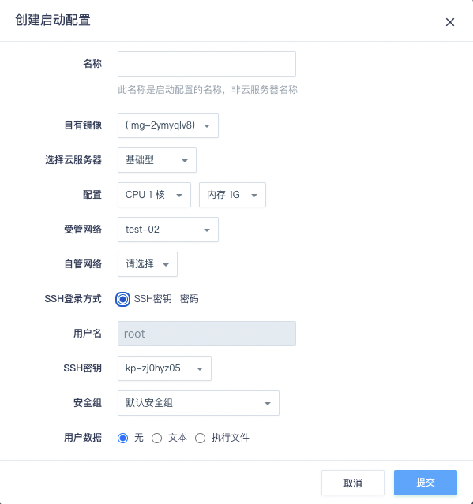
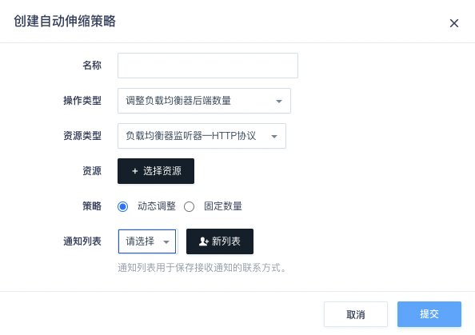
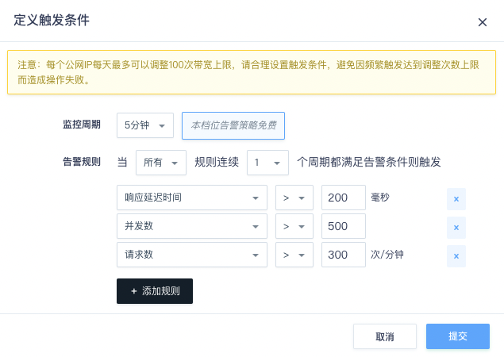
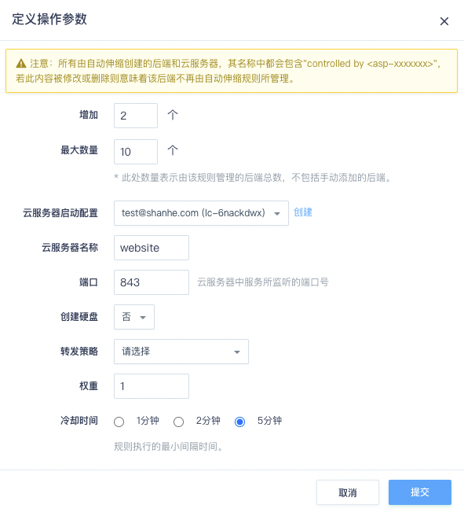
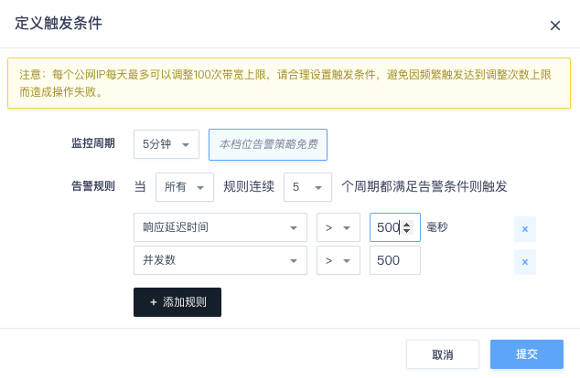
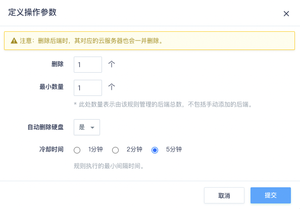
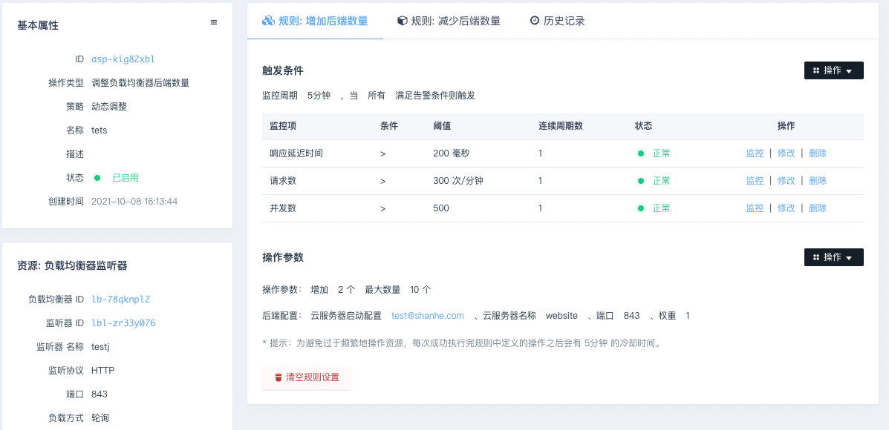
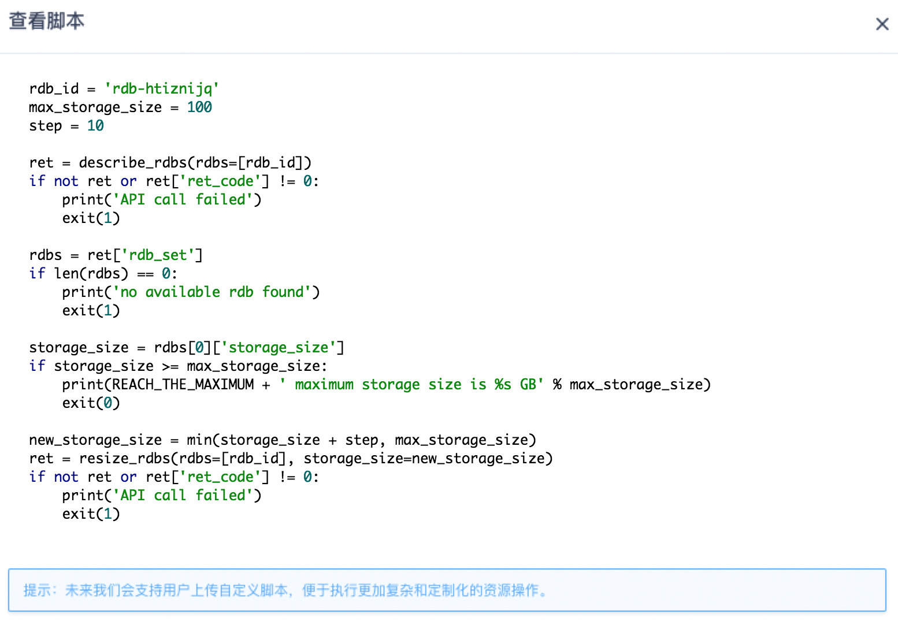
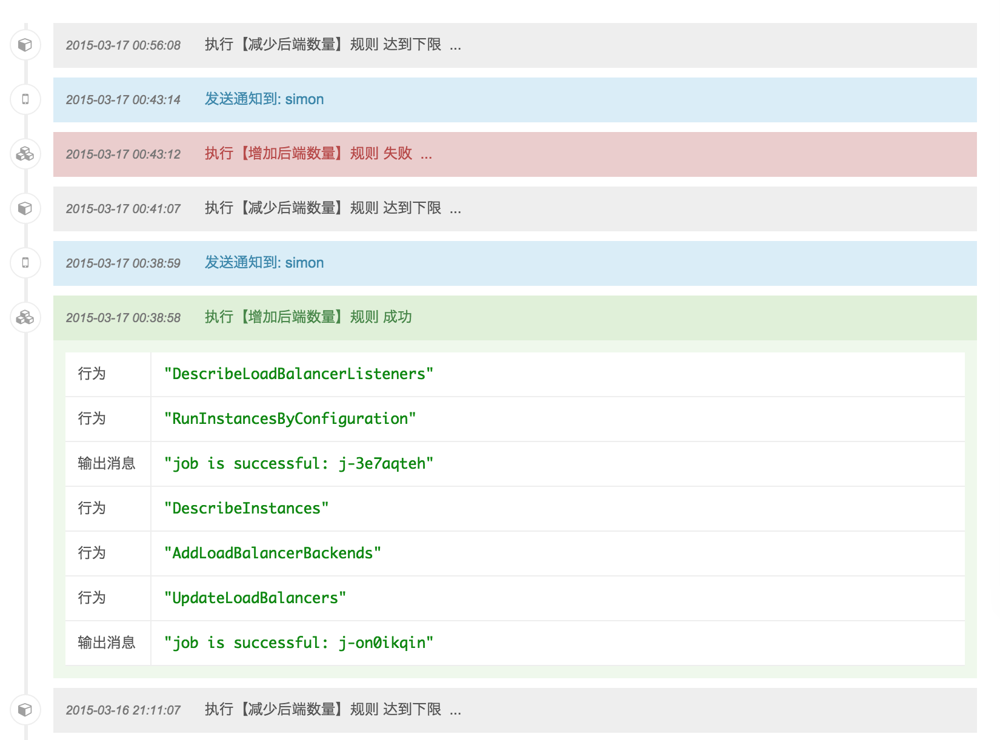

自动伸缩
创建自动伸缩
下面以负载均衡器的自动伸缩为例，介绍创建的步骤。
云服务器启动配置
只有负载均衡器的自动伸缩需要进行云服务器启动配置，因为负载均衡器的横向扩充（scale out）会创建云服务器，而创建云服务器需要很多配置项，所以必须先准备好这些配置，以便在创建云服务器时可以按照我们指定的配置来创建。
前提条件
在进行云服务器启动配置前，必须先创建自有镜像。
创建云服务器启动配置的步骤：
- 在控制台导航栏中点击关联服务区域中的自动伸缩-自动伸缩，打开自动伸缩页面。
- 在自动伸缩页面中点击云服务器启动配置，切换到云服务器启动配置页。
- 点击『创建』按钮，开始设置创建云服务器需要的参数：
- 自有镜像： 基于这个镜像创建新云服务器的操作系统。这样新建的云服务器初始便带有已搭好的环境。
- 选择云服务器： 云服务器的类型，包括基础型，企业型e2。
- 配置： 云服务器的 CPU 和内存
- 云服务器网络： 云服务器要加入的网络，包括基础网络、受管私有网络和自管私有网络。
- 云服务器登录方式： 密码登录 或 SSH 密钥登录（推荐 SSH 密钥登录，更安全）
- 安全组： 云服务器使用的防火墙
- 用户数据： 即用户自定义数据，可让用户在创建云服务器时通过上传一些自定义的参数或脚本。更多请见 User Data 指南

- 设置好后点击『提交』。
创建自动伸缩策略
在自动伸缩页点击创建按钮。选择操作类型、资源类型、资源ID 以及资源发生自动伸缩操作后接收通知的列表等信息。

提交后会进入自动伸缩策略的详情页，页面中左侧是刚才设置的信息和关联的资源，右侧是伸缩规则。 其中，数据库服务与应用存储空间的自动伸缩只支持扩容规则（硬盘不支持缩小容量）。 公网IP带宽、负载均衡器和应用节点数量都支持扩大和减少两种规则。
触发条件
下面开始定义触发条件，即根据监控数据设置阈值。如果达到阈值则触发自动伸缩。 触发条件中可设置多条告警监控规则，规则之间可以是『所有』或『任意』关系。
- 如果是『所有』关系，则每个告警规则都满足时，才能触发自动伸缩。
- 如果是『任意』关系，则一旦有一条告警规则满足，就会触发自动伸缩。
这里我们设置若响应延迟时间大于2秒，且请求数和并发数都超出一定值的话， 则触发自动伸缩为负载均衡器增加后端。 (关于监控告警策略的更多介绍可参考 监控告警)

操作参数
第二步是设置具体的操作参数，也是 AutoScaling 在执行时会参考和判断的数值。 如下面图中所示，负载均衡器在增加后端服务时，需要指定一次增加几台云服务器，以及最大数量是多少， 还有创建云服务器所需的启动配置，负载均衡服务端口号等参数。 服务端口、转发策略、权重含义可参见 负载均衡器 。
这里我们设置为增加2个后端服务器，启动配置选择刚才准备好的配置，新建的云服务器名称设为 “website” （创建后云服务器名称将会是 “website [controlled by asp-xxxx]”）， 并且后端的数量最多不超过10个。

注意
这里的最大值，是指由 AutoScaling 管理的后端数量。判断是否由 AutoScaling 管理目前是靠资源名称中是否带有 “controlled by asp-xxx” 来作为判断依据 ( 其中 “asp-xxx” 是自动伸缩策略的 ID )。 如果负载均衡器后端名称中包含这个标记，则会被 AutoScaling 调度， 如果没有则会被 AutoScaling 忽略。用户可根据需要自行修改资源名称， 决定是否交由 AutoScaling 管理。
减少的规则也是类似。 此例中若连续3个监控周期，请求数和并发数都比较低的话， 就自动减少1个负载均衡器后端，且后端数量不少于3个。
 
说明
请根据业务特点和运维情况，选择合适的监控项作为自动伸缩的触发条件，并设置适当的调节幅度。
至此自动伸缩策略创建完成。如果之后需要修改或调整，都可在自动伸缩策略详情页中操作。自动伸缩策略一旦创建完成，其『操作类型』和关联的资源便不可改变了。 如果需要对其他资源做自动伸缩，请另行创建相应的策略。下图为创建完成后的自动伸缩详情页。

说明
虽然支持扩大和减少两种规则，但只能设置其中一种。
执行自动伸缩
立即执行
当自动伸缩规则设定后，默认只有在触发条件满足时才会自动执行，但用户也可以选择立即执行自动伸缩。
在操作参数区域中的操作菜单中选择执行，可以立刻触发自动伸缩，系统将根据设定好的参数调整你的资源。
说明
每次成功执行完自动伸缩规则后，会有 5分钟 的冷却时间。 在冷却时间内自动伸缩规则不接受新的执行请求，直至冷却时间结束。 因此，在设置资源调整幅度时，需考虑冷却时间因素，设置恰当的调幅。
查看脚本
自动伸缩规则设定后，会生成为类 python 的脚本，操作时会编译并执行这个脚本。 在操作参数区域中的操作菜单中选择查看脚本，可以浏览这个脚本。
未来考虑将脚本的编写功能开放，让用户可以根据自己的需要自行编写脚本， 这样自动伸缩功能就可支持更丰富、自定义的资源调度行为，满足有复杂需求的用户。

查看自动伸缩历史记录
自动伸缩管理过程中的重要事件都会保存在历史记录中。这些重要事件包括：
- 自动伸缩的执行记录，即执行过程中的所有API调用情况，以及脚本中的输出信息。
- 发送通知给通知列表的记录，

历史记录会保留最近 50 条，更早的记录会定期删除。